We are interested in solving a
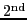
-order elliptic equation where there is some uncertainty in the background field,
subject to some boundary conditions. Monte Carlo methods have, for some time, been the standard solution method for such problems. In this setting, background field
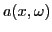
is assumed to come from a prescribed probability distribution. A great many samples of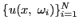
. Moments of the ensemble can then be computed to quantify uncertainty in the solution.
Often times, background field  belongs to a probability distribution
that is difficult to sample from.
Such is the case in simulations of subsurface flow and quantum field
theory (QFT). In such cases, sampling
is achieved using the computationally expensive Markov Chain Monte Carlo
(MCMC) method. In MCMC,
samples are obtained via an accept-reject process. Given the current
realization
belongs to a probability distribution
that is difficult to sample from.
Such is the case in simulations of subsurface flow and quantum field
theory (QFT). In such cases, sampling
is achieved using the computationally expensive Markov Chain Monte Carlo
(MCMC) method. In MCMC,
samples are obtained via an accept-reject process. Given the current
realization
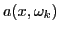
, proposed realization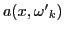
is generated via some simple transition rule (perturbing the value in each grid cell with a normal random variable, for example). The forward solution of (
If the correlation lengths in the stochastic process defining  are
small compared to the size of the domain,
the solution of even a single realization of (
are
small compared to the size of the domain,
the solution of even a single realization of ( ) is
nontrivial and may require adaptivity.
Our goal is: assuming that we have constructed an efficient multilevel
solver for (2) based on some realization of
) is
nontrivial and may require adaptivity.
Our goal is: assuming that we have constructed an efficient multilevel
solver for (2) based on some realization of
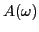
, we would like to efficiently construct a multilevel solver for (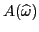
. The nature of MCMC makes this possible because consecutive realizations of the backgroundIn this talk, we will describe one such adaptive two-level solver in the setting of smoothed aggregation (or SA) algebraic multigrid (AMG) which is outlined as follows. Based on a given hierarchy for , we build a respective two-level solver for the matrix corresponding to the new parameter
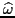
. We test the old hierarchy by iterating on the homogeneous problem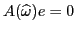
. If convergence is acceptable we retain the old hierarchy. If convergence stalls, then after several iterations on the homogeneous problem an algebraically smooth error mode,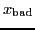
, has been exposed. This mode is added to the coarse space to improve performance. This is achieved by first localizing the problem to every aggregate exploiting an ``element-free'' approach. For the localized quadratic forms, we solve generalized eigenvalue problem. The cost of this computation is greatly reduced by searching only in the subspace spanned by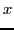
bad and the basis functions from the original hierarchy. The choice of this subspace is motivated by the fact that